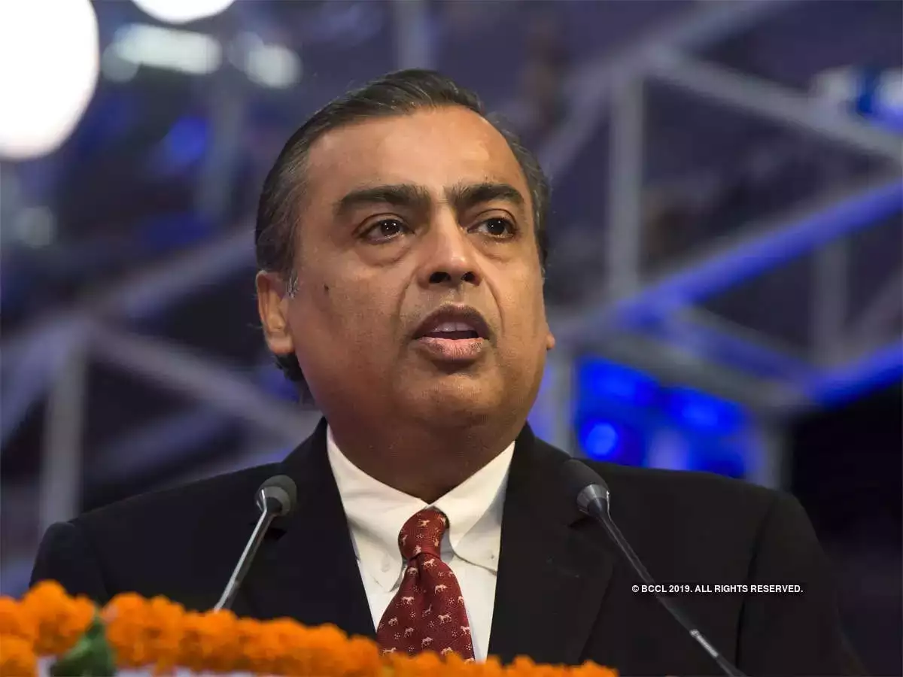

My Favourite Person is Mukesh Ambani he is The Richest Person of India

Early life
Mukesh Dhirubhai Ambani was born on 19 April 1957 in the British Crown colony of Aden (in present-day Yemen) to Dhirubhai Ambani and Kokilaben Ambani. He has a younger brother Anil Ambani and two sisters, Nina Bhadrashyam Kothari and Dipti Dattaraj Salgaocar.
Ambani lived only briefly in Yemen because his father decided to move back to India in 1958 [8] to start a trading business that focused on spices and textiles. The latter was originally named "Vimal" but later changed to "Only Vimal."[9] His family lived in a modest two-bedroom apartment in Bhuleshwar, Mumbai until the 1970s.[10] The family's financial status slightly improved when they moved to India but Ambani still lived in a communal society, used public transportation, and never received an allowance.[11] Dhirubhai later purchased a 14-floor apartment block called 'Sea Wind' in Colaba, where, until recently, Ambani and his brother lived with their families on different floors.[12]
Education
Ambani attended the Hill Grange High School at Peddar Road, Mumbai, along with his brother and Anand Jain, who later became his close associate.[13] After his secondary schooling, he studied at the St. Xavier's College, Mumbai.[14] He then received a BE degree in Chemical Engineering from the Institute of Chemical Technology.[15][16]
Ambani later enrolled for an MBA at Stanford University but withdrew in 1980 to help his father build Reliance, which at the time was still a small but fast-growing enterprise.[17] His father felt that real-life skills were harnessed through experiences and not by sitting in a classroom, so he called his son back to India from Stanford to take command of a yarn manufacturing project in his company.[11]
Ambani has been quoted as saying that he was influenced by his teachers William F. Sharpe and Man Mohan Sharma because they are "the kind of professors who made you think out of the box."[18]
Career
In 1981 he started to help his father Dhirubhai Ambani run their family business, Reliance Industries Limited. By this time, it had already expanded so that it also dealt in refining and petrochemicals. The business also included products and services in retail and telecommunications industries. Reliance Retail Ltd., another subsidiary, is also the largest retailer in India.[19] Reliance's Jio has earned a top-five spot in the country's telecommunication services since its public launch on 5 September 2016.
As of 2016, Ambani was ranked 38 and has consistently held the title of India's richest person on Forbes magazine's list for the past ten years.[20] He is the only Indian businessman on Forbes' list of the world's most powerful people.[21] As of January 2018, Mukesh Ambani was ranked by Forbes as the 18th-wealthiest person in the world. He surpassed Jack Ma, executive chairman of Alibaba Group, to become Asia's richest person with a net worth of $44.3 billion in July 2018. He is also the wealthiest person in the world outside North America and Europe.[22] As of 2015, Ambani ranked fifth among India's philanthropists, according to China's Hurun Research Institute.[23] He was appointed as a Director of Bank of America and became the first non-American to be on its board.[24]
Through Reliance, he also owns the Indian Premier League franchise Mumbai Indians and is the founder of Indian Super League, a football league in India.[25] In 2012, Forbes named him one of the richest sports owners in the world.[26] He resides at the Antilia Building, one of the world's most expensive private residences with its value reaching $1 billion.[27]